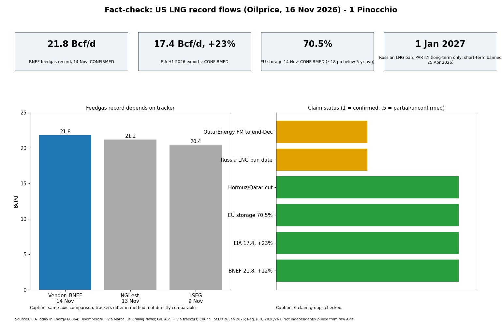

The piece's numbers hold up. The record 21.8 Bcf/d LNG feedgas (BloombergNEF, Saturday 14 Nov, +12% y/y), EIA's 17.4 Bcf/d H1 2026 exports (+23%), and EU storage of 70.5% on 14 Nov are all confirmed.
| Claim | Verdict | Confidence |
|---|---|---|
| Feedgas record 21.8 Bcf, +12% y/y, Golden Pass record, Sabine highest since April | Confirmed (BNEF via secondary reports) | Medium-high |
| EIA H1 2026 exports 17.4 Bcf/d, +23% | Confirmed (EIA Today in Energy) | High |
| Iran war cut Qatar LNG via Hormuz | Confirmed (Bloomberg, The National) | High |
| Qatar force majeure to end-Dec 2026 | Single source | Low-medium |
| Russian LNG ban from 1 Jan 2027 | Partly: long-term only | High |
| EU storage 70.5% on 14 Nov, below 5-yr avg, withdrawals begun | Confirmed (70.55%, ~15-18 pp below avg; gap varies by source) | Medium-high |
Footnote: Rating on the Washington Post 0-4 Pinocchio scale. Verification used web search and fetch only.